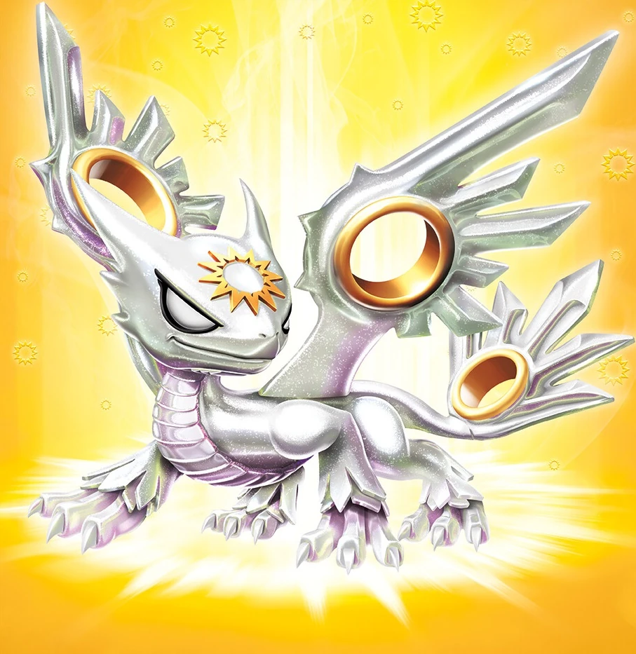
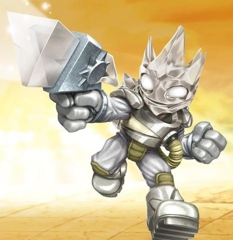
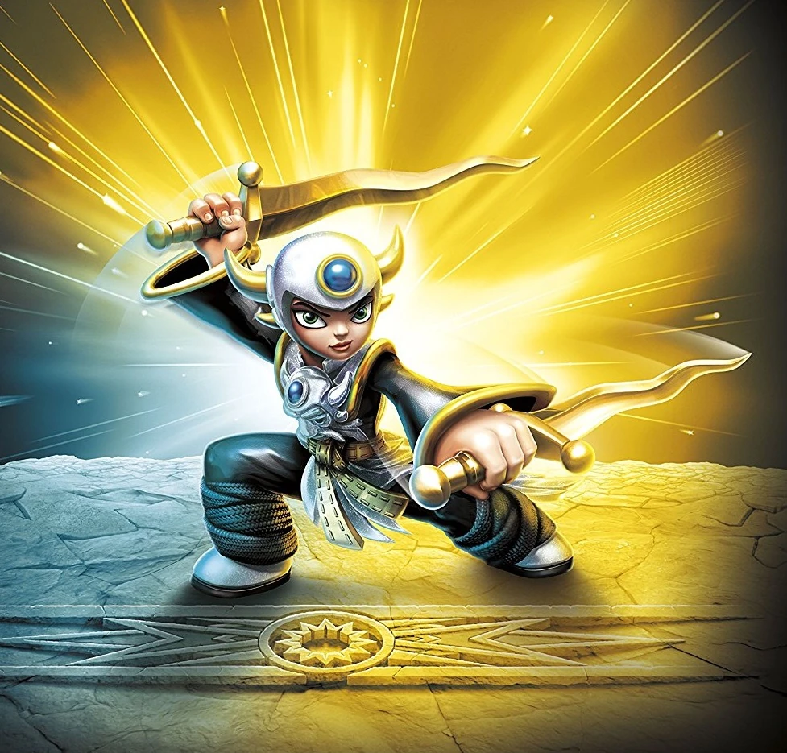
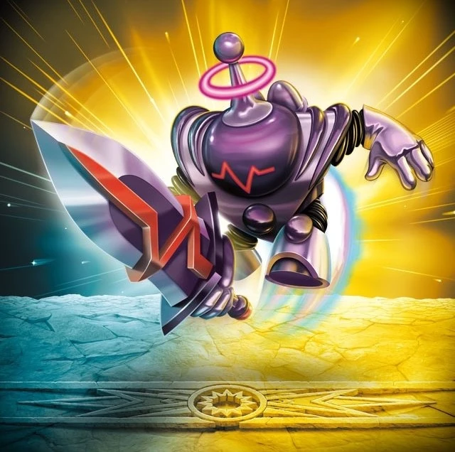

Knight Light
Before the destruction of the Core of Light left him stranded in the Light Realm, Knight Light was the protector of the Starlight – the source of light, wisdom and vast energy in Radiant City. But an evil villain known as Luminous wanted the Starlight for himself. Without warning, Luminous attacked, and the two took to the skies in an epic battle which lasted several days. In the end, Knight Light stood victorious and Luminous was imprisoned within Sunscraper Spire so that he could no longer pose a threat to Skylands. Now with his Traptanium blade, Knight Light fights alongside the Trap Team to keep evil at bay!

Spotlight
Spotlight was discovered by Master Eon in the Prismatic Palace, where the Portal Master had ventured seeking the Crystal Orb of Light. Upon finding the Orb, Eon reached out and gently touched it – causing a brilliant light to emanate in all directions. Having been infused with Eon’s magic, the Orb glowed magnificently. And when Eon slowly lowered his hand from his shielded eyes, Spotlight stood before him in a respectful bow. Her power of Light was unknown to him, for it was not of the eight common Elements in Skylands. But sensing that the Ancients sent Spotlight to him for a reason, he took her to the Core of Light and trained her to defend it as a member of the Skylanders. And when none other than evil Portal Master Kaos destroyed it – Spotlight vanished!

Astroblast
While on a secret mission in troll territory, Astroblast crash landed on a remote island where he stumbled upon an ancient relic not seen in thousands of years - a legendary Rift Engine. These magical machines were believed to have the power to travel through the portals between Skylands and other worlds! Shortly after the discovery, an army of trolls appeared on a nearby canyon ridge and quickly charged toward Astroblast. Knowing that the Rift Engine would be very dangerous in the wrong hands, he pulled out his pulse laser and prepared to defend the relic against the incoming horde. After an epic shootout, the trolls fled in defeat. When Astroblast then brought the relic back to his ship, the Sun Runner, it surged with power and a hologram of Master Eon appeared. Eon thanked him for saving the Rift Engine and beckoned him to return it to the Skylander Academy. Astroblast accepted the invitation and was made a Skylander shortly thereafter.

Aurora
Aurora is the niece of Master Eon. For years, he tried to keep her identity a secret so that she would remain safe from harm. But as she grew older, Aurora wanted nothing more than to become a Skylander, but Eon would not permit it. So without telling him, she wore a disguise and studied swordplay and combat arts under the name "Boss Blades McSlashinator." Soon, everyone was talking about this new mysterious hero and her amazing abilities. Even Master Eon was notably impressed, but when he learned the skilled fighter was none other than his own niece, he once again refused her entry into the Skylanders team. However, before she could protest, Eon smiled and told her it was because he was immediately promoting her to his Sensei program, where she would train the Swashbuckler Class under her true name and identity. Although he did later admit that "Boss Blades McSlashinator" sounded pretty cool.

Blaster-Tron
Skylanders Trap Team
As the Skylanders were fighting through The Future of Skylands, Blaster-Tron attacked them with the help of four Brawlruses after they smashed a cluster of Traptanium. He was eventually shut down and trapped.
After his capture, the heroes took him and Tae Kwon Crow to The Golden Desert for their Villain Quests, but not without fighting the Golden Queen's guards along the way. His quest was called "Help Diggs Dig", where Diggs himself explained to the Skylanders that there was some treasure buried under the sand, and needed Blaster-Tron's magnetic abilities to unveil it, probably because the Molekin didn't have a shovel and is completely blind anyway. After completing the quest, he was awarded with coins, Diggs' thanks, and a new outfit.
Skylanders Imaginators
Blaster-Tron isn't just state-of-the-art technology, he literally is from the future. When the Skylanders traveled forward in time to stop Wolfgang, they ended up bringing back the renegade robot with hopes that they could learn from his advanced circuitry. Eon immediately noticed that he had an actual "Good/Evil" switch that had been set to Evil. After flipping it to Good, Blaster-Tron was completely transformed. Besides going from bad robot to good robot, he ditched his blaster gun in exchange for a laser sword. No one knew exactly why, but as long as he was helping out the cause of justice, the Skylanders were happy. As a bonus, Master Eon noticed that his skill with the blade was second to none, and so he made Blaster-Tron a Sensei for the Knight Class, where he now gives 110% to training his students - which is technically possible because in the future, we figure out how to give more than 100%.